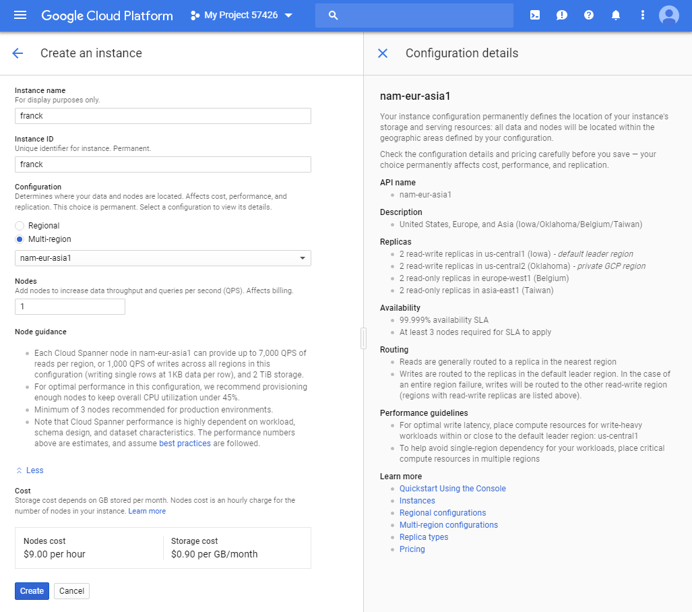
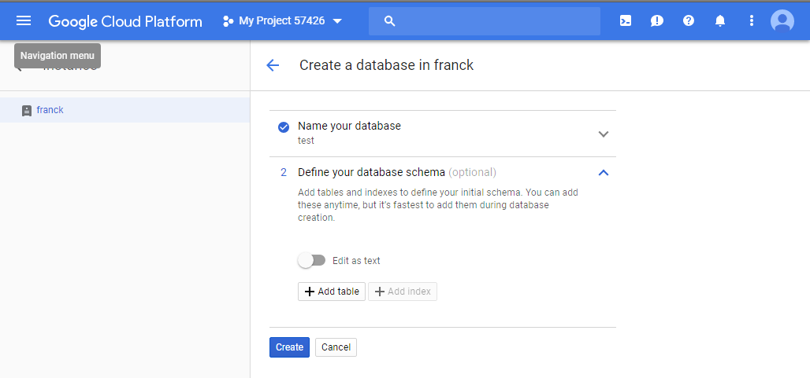
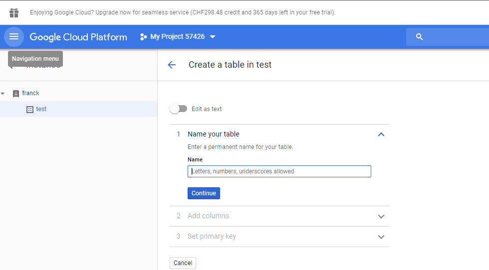
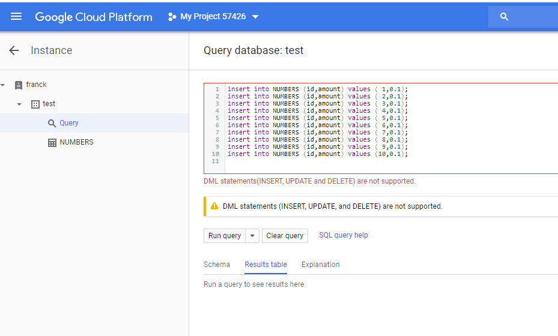
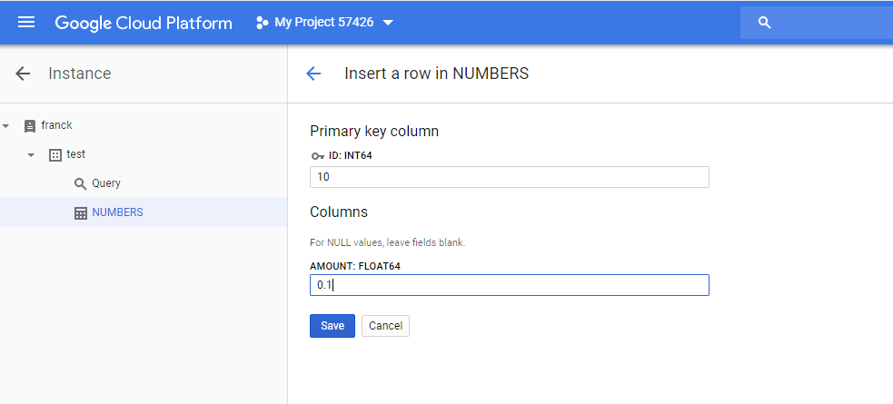
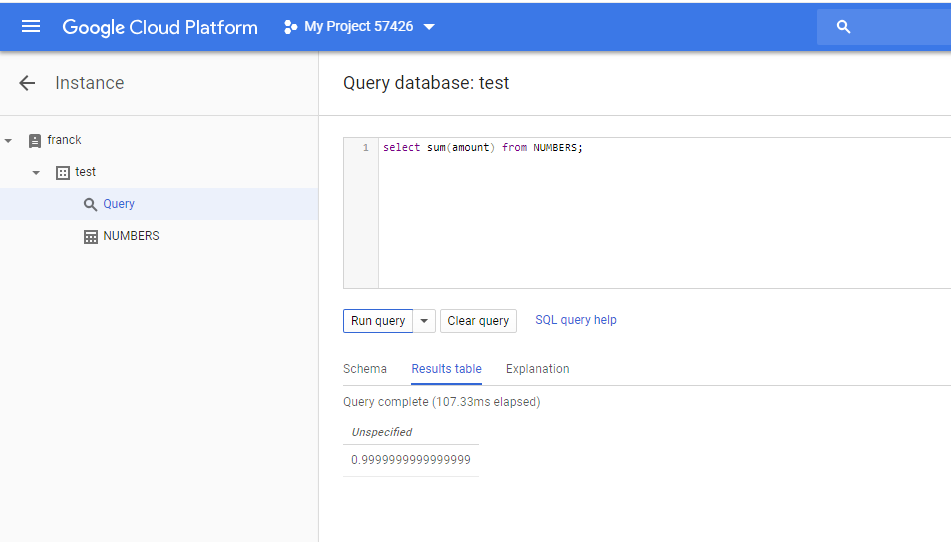
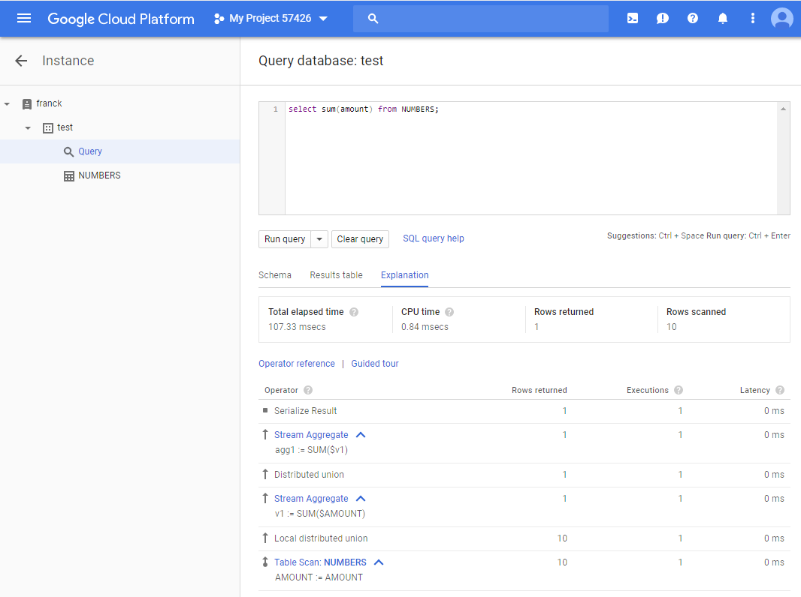

This was first published on https://www.dbi-services.com/blog/google-cloud-spanner-no-decimal-numeric-data-types/ (2018-07-16)
Republishing here for new followers. The content is related to the versions available at the publication date.
. 
Google Cloud Spanner is a distributed relational database focused on scalability without compromising consistency and integrity. It is available only as a managed service in Google Cloud. Basically, the idea is to keep the scalability advantages of NoSQL database (like Bigtable) but adding transactions, relational tables, SQL, structured data,… as in the relational databases we love for decades.
The commercial pitch includes all the NoSQL buzzwords, with the addition of the legacy properties of SQL databases:
Cloud Spanner is a fully managed, mission-critical, relational database service that offers transactional consistency at global scale, schemas, SQL (ANSI 2011 with extensions), and automatic, synchronous replication for high availability.
Here I’m testing something that is not mentioned, but is taken for granted with all SQL databases: the ability to add numbers without erroneous arithmetic results.
It is easy to test on the Google Cloud (which offers 1 year trials) by creating an instance:
Then create a Spanner database: 
And create a table: 
The table creation can also use the SQL create table statement. Here I’m testing one of the most important features of SQL databases: the numeric datatypes. This is where humans and computers do not speak the same language: Humans have full hands of 10 fingers, where computers deal only with binary digits. Humans numbers are decimal. Computer numbers are binary.
It seems that Google Spanner is binary only. According to the documentation, the only numeric types are:
So, there are no decimal datatypes and decimal values will be approximated by binary values. This is ok to store computer numbers, but not human numbers such as prices, salaries,…
In order to show the problem I’ve created a table with FLOAT64:
CREATE TABLE NUMBERS (
ID INT64 NOT NULL,
AMOUNT FLOAT64,
) PRIMARY KEY (ID)
The SQL Query interface do not allow for DML other than SELECT: 
So we can use the API or this simple from from the ‘data’ tab: 
I’ve added 10 rows with ‘0.1’ which is easy to represent in decimal arithmetic, but not in binary arithmetic. Look at the sum: 
This is binary arithmetic applied to decimal numbers: approximation. You can select each rows and see ‘0.1’ but when you sum all the 10 rows together, you get less than 1. That’s probably close enough for some ‘BigData’ usage, accountants will not like it.
If you wonder why it takes 100 milliseconds for this 10 rows table, remember that this is a distributed database across 3 continents. Here is the execution plan: 
Do not forget that all the new trends for databases, in the ‘micro-services’ era, are focused at specific use-cases. They do not compete with the ‘old’ relational databases which are general purpose and have integrated, version after version, all the different ways to store and process data shared by multiple applications. Those NoSQL and NewSQL can be considered as an alternative only within the scope of what they are designed for. Spanner was desgined for Google internal use in Google AdWords and then provided as a service for similar use. It was developed to solve a specific problem: the lack of transactions in Bigtable.
Note that the Open Source alternative that is close to Google Spanner is CockroachDB which has a DECIMAL datatype to store fixed-point decimal numbers.
Updated in 2020: YugaByteDB is also an alternative, fully open-source.
Finally, a numeric datatype is there in Spanner: https://cloud.google.com/spanner/docs/data-types#numeric_type
{kind=link}
{kind=link}
{kind=link}
{kind=link}
{kind=link}
{kind=link}
{kind=link}